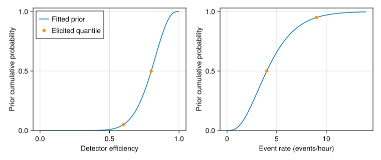
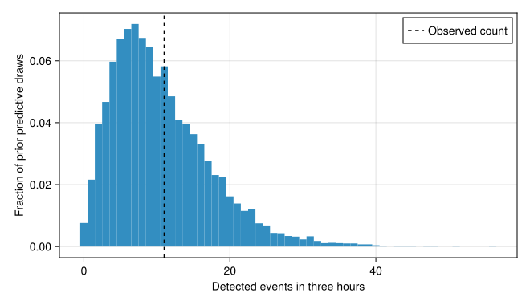

Using an elicited prior in FlatPPL
A detector records events with uncertain efficiency. Its detected count over a fixed exposure follows a Poisson law with mean exposure * efficiency * rate. We elicit a joint prior for efficiency and event rate in Julia, export that prior, and use it in a FlatPPL observation model.
Run the example from the package directory with Julia 1.13 or later:
julia --project=examples -e 'using Pkg; Pkg.instantiate()'
julia --project=examples examples/flatppl.jlusing Credence, MeasureBase, Optimization, OptimizationOptimJL, Randomusing CairoMakieimport ForwardDiffusing Distributions: Poisson, logpdfElicit efficiency and event rate
Suppose calibration knowledge gives efficiency median 0.8 and fifth percentile 0.6. The event rate has median 4 events/hour and 95th percentile 9 events/hour. Scales set the units of fitting discrepancies. We assume a Beta efficiency prior, a Gamma rate prior, and independence between the two parameters.
beliefs = ( :efficiency => ( Approximate(:median, Quantile(0.5), 0.8; scale=0.1), Approximate(:lower, Quantile(0.05), 0.6; scale=0.1), ), :rate => ( Approximate(:median, Quantile(0.5), 4.0; scale=2.0), Approximate(:upper, Quantile(0.95), 9.0; scale=2.0), ),)candidates = ( :efficiency => (:beta => ScaledBetaFamily(0.0, 1.0),), :rate => (:gamma => GammaFamily(),),)problem = Elicitation( beliefs, candidates; combinations=(:calibration => Independent(:efficiency => :beta, :rate => :gamma),),)report = fit( Xoshiro(72), problem, BFGS(); adtype=Optimization.AutoForwardDiff(), maxiters=10000, g_tol=1e-10,)validation = validate(Xoshiro(73), report)selected_id = (:calibration, 1)display(belief_summary(validation; result_id=selected_id))Review the fitted quantiles and record acceptance of the family assumptions.
selection = select( report, selected_id; validation, rationale="The fitted quantiles represent the calibration judgments under independent Beta and Gamma priors.",)prior = measure(selection)Check the fitted marginal CDFs against the elicited quantile points.
mkpath("elicitation-output")marginal_figure = Figure(; size=(760, 320))factors = marginals(prior)for (i, (law, grid, label, x, p)) in enumerate(( ( factors.efficiency, range(0, 1; length=180), "Detector efficiency", [0.6, 0.8], [0.05, 0.5], ), ( factors.rate, range(0, 14; length=180), "Event rate (events/hour)", [4, 9], [0.5, 0.95], ),)) axis = Axis(marginal_figure[1, i]; xlabel=label, ylabel="Prior cumulative probability") values = [evaluate(Probability(-Inf, t), law).value for t in grid] lines!(axis, grid, values; label="Fitted prior") scatter!(axis, x, p; color=:darkorange, marker=:diamond, label="Elicited quantile") ylims!(axis, 0, 1.03) i == 1 && axislegend(axis; position=:lt)endsave("elicitation-output/detector-marginals.svg", marginal_figure)CairoMakie.Screen{SVG}

Export the prior and define the likelihood
flatppl(selection) returns a formatted measure expression. Its named factors retain the fitted parameters and support. Insert that expression into a FlatPPL source file.
The model below uses three hours of exposure and an observed count of 11. elementof declares each parameter's domain. kernelof constructs the conditional count distribution, and likelihoodof fixes the observed count. bayesupdate multiplies this likelihood by the exported prior to form an unnormalized posterior.
exposure = 3.0observed_count = 11source = """flatppl_compat = "0.1"prior = $(flatppl(selection))exposure = $exposureobserved_count = $observed_countefficiency = elementof(interval(0.0, 1.0))rate = elementof(posreals)count ~ Poisson(exposure * efficiency * rate)observation_model = kernelof(count, efficiency = efficiency, rate = rate)likelihood = likelihoodof(observation_model, observed_count)posterior = bayesupdate(likelihood, prior)point = record(efficiency = 0.8, rate = 4.0)prior_logdensity = logdensityof(prior, point)posterior_logdensity = logdensityof(posterior, point)"""println(source)write("elicitation-output/counting-model.flatppl", source)flatppl_compat = "0.1"
prior = joint(
efficiency = locscale(Beta(11.96995919392684, 3.235606091440457), 0.0, 1.0),
rate = Gamma(3.3654908143733877, 0.7596675974563871)
)
exposure = 3.0
observed_count = 11
efficiency = elementof(interval(0.0, 1.0))
rate = elementof(posreals)
count ~ Poisson(exposure * efficiency * rate)
observation_model = kernelof(count, efficiency = efficiency, rate = rate)
likelihood = likelihoodof(observation_model, observed_count)
posterior = bayesupdate(likelihood, prior)
point = record(efficiency = 0.8, rate = 4.0)
prior_logdensity = logdensityof(prior, point)
posterior_logdensity = logdensityof(posterior, point)Download the complete FlatPPL model. Open this file in a FlatPPL environment to inspect the prior, likelihood, and posterior. The fixed point also provides a density check against Julia.
Check the density in Julia
At the same parameter point, the posterior log density is the sum of the prior log density and Poisson log likelihood. The FlatPPL bindings prior_logdensity and posterior_logdensity should match the values below.
point = (efficiency=0.8, rate=4.0)prior_logdensity = logdensityof(prior, point)posterior_logdensity = prior_logdensity + logpdf(Poisson(exposure * point.efficiency * point.rate), observed_count)(; point, prior_logdensity, posterior_logdensity)(point = (efficiency = 0.8, rate = 4.0), prior_logdensity = -0.3938025582571225, posterior_logdensity = -2.6167163209193136)The posterior measure includes the likelihood but retains its unknown normalizing constant. Posterior inference can use this density in the host environment.
Check the implied counts
Simulate 10,000 counts under the exported model's prior and likelihood. Compare the observed count with the resulting prior predictive frequencies.
rng = Xoshiro(74)counts = map(1:10_000) do _ draw = rand(rng, prior) rand(rng, Poisson(exposure * draw.efficiency * draw.rate))endpredictive = Figure(; size=(660, 380))axis = Axis( predictive[1, 1]; xlabel="Detected events in three hours", ylabel="Fraction of prior predictive draws",)hist!(axis, counts; bins=-0.5:1:(maximum(counts)+0.5), normalization=:probability)vlines!(axis, [observed_count]; color=:black, linestyle=:dash, label="Observed count")axislegend(axis)save("elicitation-output/detector-counts.svg", predictive)CairoMakie.Screen{SVG}
